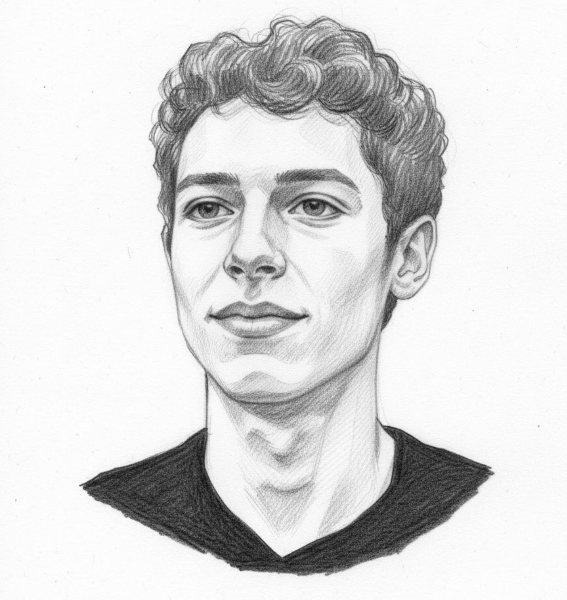

Builder • Tinkerer • Learner
Eden Marks
I build projects, automate my home, and turn ideas into working tools.

About Me
I am a student developer who likes building useful things and learning by doing. My work mixes software projects, smart home automation, and hands-on hardware experiments.
I enjoy Java and Python most, but I also spend a lot of time working with Home Assistant, home automation, and ESP32 projects. I use Linux as my daily driver and like taking ideas from concept to working setup and improving them through real use.
Skills
Selected Work
Utility Hub
My first GitHub Pages site was a hub for small tools I built to make my life easier, from Minecraft command block helpers to text utilities and quick productivity experiments.
Class Finder
A closed source app I am currently building with Flet. The goal is to make a practical, useful tool that solves a real problem in a simple and accessible way.
MindFind
MindFind was a social media style project aimed at brain users, where people could upload puzzles and solutions. It was a simple local prototype that never launched publicly and was mainly a learning project.
ESP32 Experiments
I enjoy working with ESP32 devices and building small connected projects, especially when they connect to home automation, practical tools, and everyday problem solving.
Let's Connect
I am always working on something new, whether it is a web project, a smart home idea, or a small hardware build. If you want to talk about code, automation, or creative tech, feel free to reach out.
Send me an Email